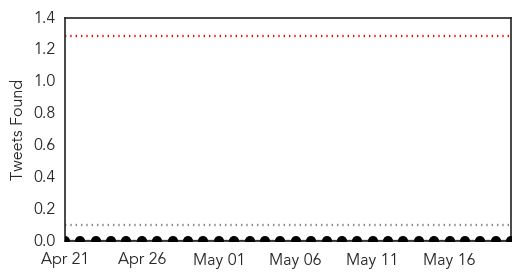
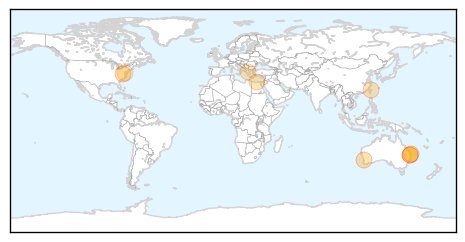
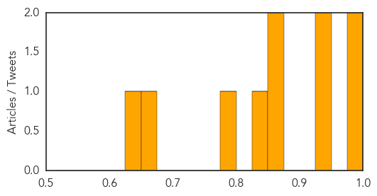

West Nile Virus
30-Day Web Trend
0 alerts, 0 warnings

30-Day Twitter Trend
0 alerts, 0 warnings

Article Locations

Article Confidences

Top Articles:
Top Tweets:
-
No tweets found for May 20, 2015
Measles
30-Day Web Trend
0 alerts, 0 warnings

30-Day Twitter Trend
0 alerts, 0 warnings

Article Locations
Article Confidences
Top Articles:
- 0.983
- Thousands At Risk After Contagious Paramedic Visits Hospitals, Tourist Site
- 0.982
- Measles case confirmed for Gold Coast following Brisbane paramedic infected
- 0.934
- Queensland Ambulance Service paramedic tests positive to measles
- 0.929
- Tourists at risk in Queensland measles outbreak
- 0.871
- Fairfax County Health Officials Investigating Confirmed...
- 0.869
- Taipei duty-free shop staff ...｜Society｜WCT
- 0.833
- People in Fairfax County, D.C. may have been exposed to measles patient
- 0.776
- European Public Policies Reduce Health Care Access, Says Report
- 0.657
- Measles jabs for all ambos proposed
- 0.648
- Officials investigating measles case, possible exposure to others in DC and Fairfax County - Story
Top Tweets:
-
No tweets found for May 20, 2015